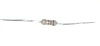

What is Resistor
What is resistor and resistor calculations.
- What is resistor
- Ohm's law
- Resistors in parallel
- Resistors in series
- Dimensions and material affects
- Resistor image
- Resistor symbols
- Resistor color code
- Resistor types
What is resistor
Resistor is an electrical component that reduces the electric current.
The resistor's ability to reduce the current is called resistance and is measured in units of ohms (symbol: Ω).
If we make an analogy to water flow through pipes, the resistor is a thin pipe that reduces the water flow.
Ohm's law
The resistor's current I in amps (A) is equal to the resistor's voltage V in volts (V)
divided by the resistance R in ohms (Ω):

The resistor's power consumption P in watts (W) is equal to the resistor's current I in amps (A)
times the resistor's voltage V in volts (V):
P = I × V
The resistor's power consumption P in watts (W) is equal to the square value of the resistor's current I in amps (A)
times the resistor's resistance R in ohms (Ω):
P = I 2 × R
The resistor's power consumption P in watts (W) is equal to the square value of the resistor's voltage V in volts (V)
divided by the resistor's resistance R in ohms (Ω):
P = V 2 / R
Resistors in parallel

The total equivalent resistance of resistors in parallel RTotal is given by:

So when you add resistors in parallel, the total resistance is decreased.
Resistors in series

The total equivalent resistance of resistors in series Rtotal is the sum of the resistance values:
Rtotal = R1+ R2+ R3+...
So when you add resistors in series, the total resistance is increased.
Dimensions and material affects
The resistance R in ohms (Ω) of a resistor is equal to the resistivity ρ in ohm-meters (Ω∙m) times the resistor's length l in meters (m) divided by the resistor's cross sectional area A in square meters (m2):

Resistor image

Resistor symbols
|
|
Resistor (IEEE) | Resistor reduces the current flow. |
|
|
Resistor (IEC) | |
|
|
Potentiometer (IEEE) | Adjustable resistor - has 3 terminals. |
|
|
Potentiometer (IEC) | |
|
|
Variable Resistor / Rheostat (IEEE) | Adjustable resistor - has 2 terminals. |
|
|
Variable Resistor / Rheostat (IEC) | |
|
|
Trimmer Resistor | Presest resistor |
|
|
Thermistor | Thermal resistor - change resistance when temperature changes |
|
|
Photoresistor / Light dependent resistor (LDR) | Changes resistance according to light |
Resistor color code
The resistance of the resistor and its tolerance are marked on the resistor with color code bands that denotes the resistance value.
There are 3 types of color codes:
- 4 bands: digit, digit , multiplier, tolerance.
- 5 bands: digit, digit, digit , multiplier, tolerance.
- 6 bands: digit, digit, digit , multiplier, tolerance, temperature coefficient.
Resistance calculation of 4 bands resistor
R = (10×digit1 + digit2) × multiplier
Resistance calculation of 5 or 6 bands resistor
R = (100×digit1 + 10×digit2+digit3) × multiplier
Resistor types
| Variable resistor | Variable resistor has an adjustable resistance (2 terminals) |
| Potentiometer | Potentiometer has an adjustable resistance (3 terminals) |
| Photo-resistor | Reduces resistance when exposed to light |
| Power resistor | Power resistor is used for high power circuits and has large dimensions. |
|
Surface mount
(SMT/SMD) resistor |
SMT/SMD resistors have small dimensions. The resistors are surface mounted on the printed circuit board (PCB), this method is fast and requires small board area. |
| Resistor network | Resistor network is a chip that contains several resistors with similar or different values. |
| Carbon resistor | |
| Chip resistor | |
| Metal-oxide resistor | |
| Ceramic resistor |
Pull-up resistor
In digital circuits, pull-up resistor is a regular resistor that is connected to the high voltage supply (e.g +5V or +12V) and sets the input or output level of a device to '1'.
The pull-up resistor set the level to '1' when the input / output is disconnected. When the input / output is connected, the level is determined by the device and overrides the pull-up resistor.
Pull-down resistor
In digital circuits, pull-down resistor is a regular resistor that is connected to the ground (0V) and sets the input or output level of a device to ' 0 '.
The pull-down resistor set the level to ' 0 ' when the input / output is disconnected. When the input / output is connected, the level is determined by the device and overrides the pull-down resistor.
See also
ELECTRONIC COMPONENTS
RAPID TABLES